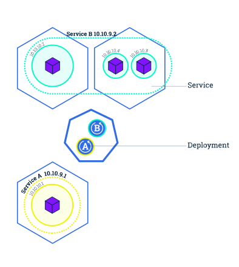
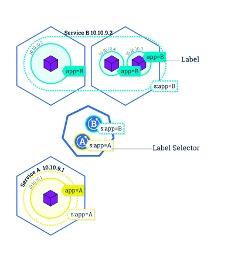

Services
尽管Pod在集群内有自己唯一的IP地址，但这些IP地址并没有暴露在Kubernetes之外。考虑到随着时间的推移Pod可能会被停止、删除或替换，我们需要一种机制，能让各个Pod和应用可以自动地找到彼此。Kubernetes的解决方案是将Pod组合为Service。Kubernetes的Service是一个抽象层，它定义了Pod的逻辑组合，可以处理Pod的外部流量，负载均衡和服务发现。
这种抽象能将Pod暴露给集群之外的流量访问，Service有自己唯一的集群内私有IP地址，也会向外部流量暴露一个端口。如果你需要在集群外访问这些服务，可以选择以下方式：
- 负载均衡器：提供一个公有的IP地址（通常会在GKE或AWS上运行Kubernetes时用到）
- NodePort：通过NAT（所有Kubernetes集群和Minikube都适用）将集群上的Service暴露在相同的端口上
总结：
- 将Pod暴露给外部流量
- 跨Pod的流量负载均衡
- 使用label
Kubernetes的Service是一个抽象层，它定义了Pod的逻辑组合，可以处理Pod的外部流量，负载均衡和服务发现。
Service概览

Service提供了Pod间流量的负载均衡，如果Service是被用来组合一个来自特定Deployment（在下一个关卡中，有多个实例运行的情况，我们的应用会使用到这个功能）的所有Pod，这个功能会非常有用。
Service也负责集群内部的服务发现（关卡6中会涉及），这样前端服务（如web服务器）可以不用关心Pod，就能接收到后端服务（如数据库）的流量。
Service通过Label Selector来给Pod配对，Label Selector是一个能在Label上进行逻辑操作的分组基元。
你可以通过在kubectl的run命令后添加--expose参数，在启动Deployment时创建一个Service
Label是绑定到对象（比如Pod）的键值对，你可以把它想象为社交网络中的话题标签。它们将相关的对象以一种用户可以理解的方式组合起来，比如：
- 生产环境（生产，测试，开发）
- 应用版本（beta，v1.3）
- 服务/服务器类型（前端，后端，数据库）
Label是绑定到对象的键/值对
Labels

可以在对象的创建之初，将Label绑定到对象上，也可以后续绑定，并且可以随时更新绑定关系。 kubectl的run命令在新的Pods/ Deployment上设置了一些默认的Labels/Label Selectors。Label和Label Selectors之前的关系定义了Deployment和其创建的Pod之间的关系。
下面让我们通过Service实现应用的外部访问，然后练习下Label的使用吧！